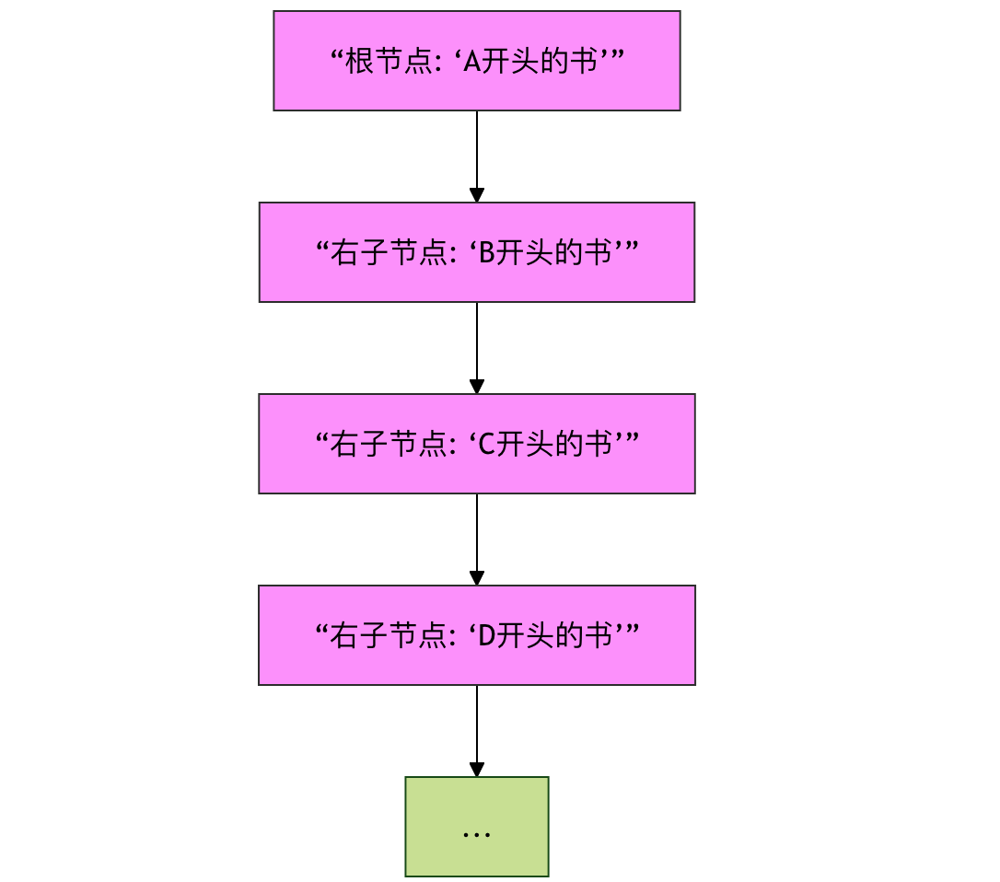
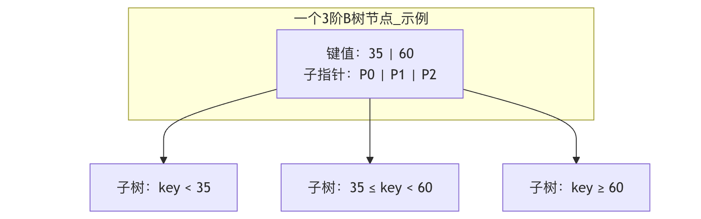
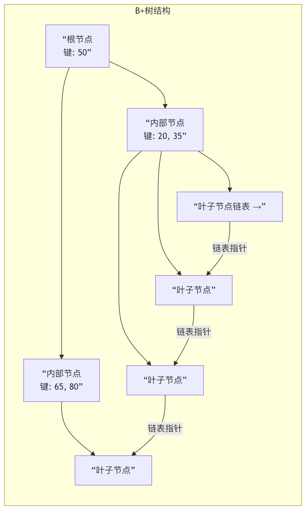

Advanced Tree Structures
After mastering basic tree structures such as binary trees and binary search trees, we are about to step into a broader and more efficient domain—advanced tree structures.
If basic trees are ordinary roads in the world of data structures, then advanced tree structures are carefully designed highways and interchanges. Through ingenious balancing rules and storage strategies, they ensure excellent performance even when data volumes are huge or operations are frequent.
This section will introduceAVL Tree、red-black tree、B-TreeandB+ TreeThese four classic advanced tree structures.
Why do we need advanced tree structures?
Before diving deeper, let us first ask a question: with an efficient binary search tree (BST) at hand, why do we still need more complex trees?
Imagine you have a library and use a BST to store books sorted by title. If you insert books one by one in alphabetical order (for example:A..., B..., C...), the tree degenerates into a chain (similar to a linked list). At this point, the time to find a book changes from the idealO(log n)Worst-case degradationO(n), extremely low efficiency.

Figure: a schematic diagram of a binary search tree degenerating into a linked list when inserting ordered data, causing lookup performance to degrade.
Advanced tree structures (self-balancing trees) were born precisely to solve this problem.. They automatically adjust the tree's shape when inserting or deleting nodes, keep the tree balanced, thereby ensuring that the time complexity of operations such as search, insertion, and deletion always remains atO(log n)Level.
AVL Tree: The Guardian of Height Balance
The AVL tree is the earliest self-balancing binary search tree ever invented, named after its inventors Adelson-Velsky and Landis.
The core idea of the AVL tree is very simple:For any node in the tree, the height difference between its left subtree and right subtree cannot exceed 1.。
Core Concept: Balance Factor
Each node has aBalance Factor, and its calculation formula is:Balance factor = height of left subtree - height of right subtreeIn an AVL tree, the balance factor of each node can only be -1, 0, or 1.
Imbalance and rotation adjustment
After inserting or deleting a node, if a node's balance factor becomes 2 or -2, the tree is unbalanced. To restore balance, the AVL tree uses fourRotationoperations to adjust:
- Left Rotation: Handles the "right-right" imbalance case.
- Right Rotation: Handles the "left-left" imbalance case.
- Left-Right Rotation: first left rotation then right rotation, handling the "left-right" unbalanced case.
- Right-Left Rotation: first right rotation then left rotation, handling the "right-left" unbalanced case.
Example
def __init__(self, key):
self.key = key
self.height = 1 # Node height, initially 1
self.left = None
self.right = None
def get_height(node):
"""Get node height (handle empty nodes)"""
return node.height if node else 0
def get_balance_factor(node):
"""Calculate the balance factor of a node"""
if not node:
return 0
return get_height(node.left) - get_height(node.right)
def right_rotate(y):
"""
Perform a right rotation on the subtree rooted at y
y x
/ \ / \
x T4 right rotate (y) z y
/ \ - - - - - - - -> / \ / \
z T3 T1 T2 T3 T4
/ \
T1 T2
"""
x = y.left
T3 = x.right
# Perform the rotation
x.right = y
y.left = T3
# Update heights (must update y's height first, then x's height)
y.height = 1 + max(get_height(y.left), get_height(y.right))
x.height = 1 + max(get_height(x.left), get_height(x.right))
# Return the new root node
return x
# The left rotation function is symmetric to the right rotation; the detailed implementation is omitted here
def left_rotate(x):
"""Perform a left rotation on the subtree rooted at x (the logic is symmetric to the right rotation)"""
pass
Summary of AVL Tree Characteristics
| Features | Description |
|---|---|
| Strictly balanced | The balance condition is strict (height difference ≤ 1), the tree height is closest to log n, and search performance is excellent. |
| Frequent adjustments | After insertion/deletion, multiple rotations from bottom to top may be needed to restore balance. |
| Applicable scenarios | SuitableMore queries, fewer insertions/deletionsscenarios, such as the middle layer of database indexes or in-memory lookup tables. |
Red-Black Tree: The King of Engineering Practice
The red-black tree is another self-balancing binary search tree. It makes some “compromises” based on the AVL tree. Rather than pursuing absolute balance like the AVL tree, it uses a set of more relaxed rules to ensure approximate balance, thereby reducing the number of rotations during insertion/deletion and achieving better engineering results in overall performance. Java'sTreeMap、TreeSetand C++ STL'smap、setAll of their underlying implementations use red-black trees.
The Five Core Rules of Red-Black Trees
Red-black trees maintain balance by adding a color attribute (red or black) to nodes and obeying the following rules:
- Every node is either red or black.
- The root node is black。
- All leaf nodes (NIL empty nodes) are black.
- The two children of a red node must be black.(i.e., there cannot be consecutive red nodes).
- All paths from any node to each of its leaf nodes containThe same numberThe black nodes.
Rules 4 and 5 are key to red-black tree balance. Rule 5 ensures that no path is more than twice as long as any other path, thus achieving approximate balance.
Insertion adjustment strategy
When inserting a new node, we always first color itRed(to avoid violating rule 5). If this causes a conflict (mainly violating rule 2 or rule 4), it needs to be adjusted throughColor changeandRotationto adjust. The core idea of adjustment is to continuously "move up" the conflict (red) toward the root until it can be resolved by recoloring or rotation.
Example
RED = "RED"
BLACK = "BLACK"
def __init__(self, key):
self.key = key
self.color = self.RED # New node is initially red
self.left = None
self.right = None
self.parent = None # The red-black tree needs a parent pointer
def insert_fixup(tree, node):
"""Repair red-black tree properties after insertion (simplified logic description)"""
while node.parent and node.parent.color == RBNode.RED:
# Case 1: the uncle node is red -> recolor
# Cases 2 & 3: the uncle node is black -> solved by rotation and recoloring
# ... (The actual implementation involves a large number of pointer operations; here is a logical description)
pass
tree.root.color = RBNode.BLACK # Ensure the root node is black
Red-Black Tree vs. AVL Tree
| Features | AVL Tree | red-black tree |
|---|---|---|
| Balance criterion | Strict (height difference ≤ 1) | Loose (approximate balance guaranteed via color rules) |
| Search performance | Better(tree is more balanced) | Slightly inferior, but still O(log n) |
| Insert/Delete | May requireMore rotations | Fewer rotations,More efficient |
| Applicable scenarios | Scenarios requiring frequent lookups | High comprehensive performance requirementsscenarios, such as language standard libraries and file systems. |
B-Tree and B+ Tree: The Engine of Disk Storage
When data is too large to fit entirely in memory, it must be stored on disk. Disk I/O (read/write) speed is much slower than memory access. B-trees and B+ trees are designed toReduce the number of disk I/O operationsDesigned forMulti-way balanced search tree, and they are widely used in database and file system indexes.
B-tree: balanced multi-way search tree
A B-tree no longer has each node store only one data item and two pointers. AB-tree of order mA node has the following characteristics:
- Each node has at mostm child nodes。
- Every non-root, non-leaf node has at least⌈m/2⌉ child nodes。
- root node has at least 2 child nodes (unless it is itself a leaf node).
- All leaf nodes are located at the same level.
- If a non-leaf node has k child nodes, it containsk-1 keys, and these keys partition the value ranges of the subtrees.

Figure: A structural diagram of an order-3 B-tree node. It contains two keys and three pointers, dividing the data range into three intervals.
Advantages of B-treelies in its short, fat tree shape. Because a node can store multiple keys and have multiple child nodes, the tree height is greatly reduced. When searching for a data item, fewer disk pages (nodes) need to be loaded, improving efficiency.
B+ Tree: The Upgraded Version of the B-Tree
B+ trees make key improvements over B-trees and are theDe facto standard。
Core Differences Between B+ Trees and B-Trees:
- Data storage location: In the B+ tree,All data records (or pointers to records) are stored only in leaf nodes.. Internal nodes (non-leaf nodes) store only keys for routing.
- Leaf node linked list: all leaf nodes are linked through pointers into aOrdered doubly linked list。

Figure: B+ tree diagram. Note that data is only in leaf nodes, and leaf nodes form an ordered linked list.
The Huge Advantage of B+ Trees
| Advantages | Explanation |
|---|---|
| More stable query efficiency | Any search must go to a leaf node; path lengths are the same, so performance is stable. |
| Higher space utilization | Internal nodes do not store data, so they can hold more keys, making the tree shorter and reducing I/O. |
| Powerful range query | Through the linked list of leaf nodes, efficientWHERE age BETWEEN 20 AND 30range queries can be performed, whereas B-trees require complex in-order traversal. |
| Better suited for disk prefetching | Disk reads/writes are done by pages (blocks). B+ tree nodes are usually designed to be exactly one page in size, so one I/O can load more keys, further reducing I/O. |
Summary
Let's use a table to review these four advanced tree structures:
| Tree structure | Core objective | Key features | Typical applications |
|---|---|---|---|
| AVL tree | Ultimate query speed | Highly strictly balanced, with frequent rotation adjustments | Scenarios requiring fast lookups in memory |
| red-black tree | Balanced comprehensive performance | Approximately balanced via color rules, efficient insertion and deletion | Language standard libraries (Map/Set), process scheduling |
| B-tree | Reduce disk I/O | Multi-way balanced, data can be stored in internal nodes | Early file systems, certain database indexes |
| B+ tree | Optimize database index | Data only stored in leaves, leaves form a linked list, strong range queries | Modern relational database (MySQL, PostgreSQL) indexes |